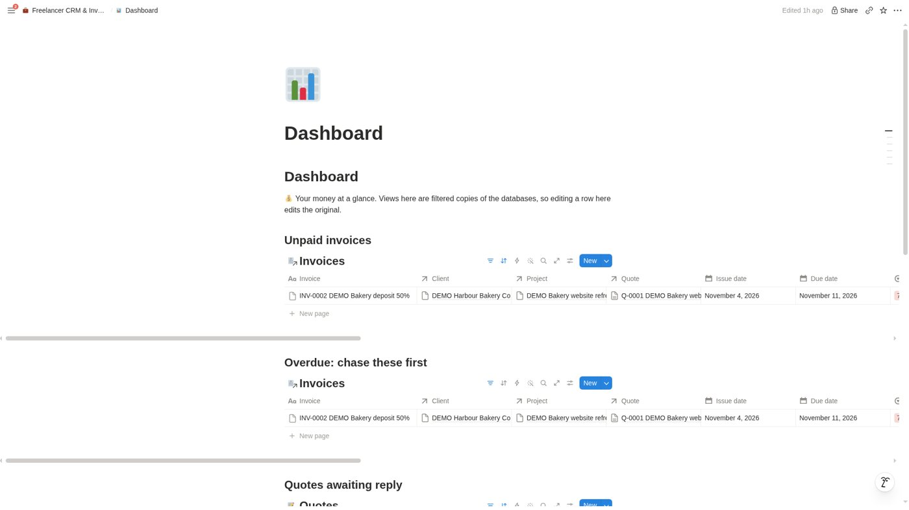
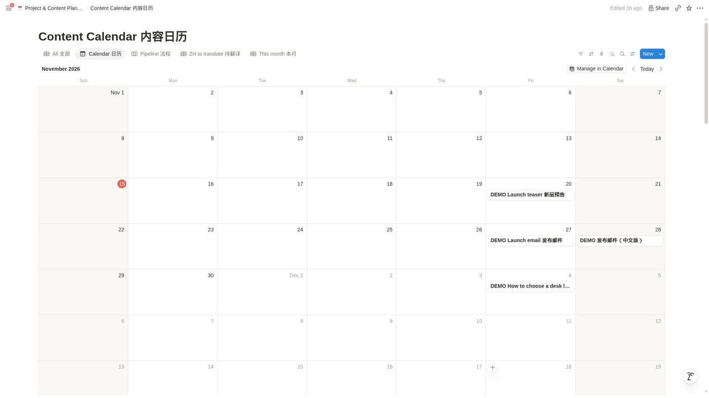
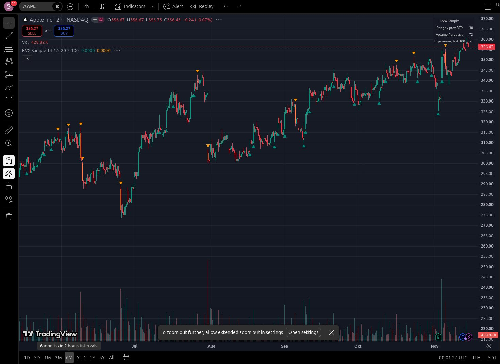
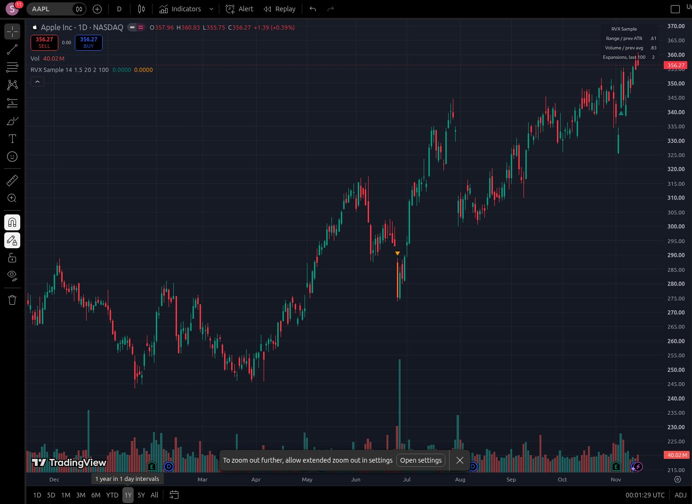

Templates & tools
Working tools I built and published myself. Free to look at and duplicate.
Notion templates
Clients, projects and invoices in linked databases, with paid/unpaid status, totals and a dashboard.

Projects, tasks and a content calendar with bilingual labels, a status board and a monthly view.

n8n automation
Shopify and Google Sheets automations (order logging, low-stock alerts).
TradingView Pine Script · sample
Marks closed bars where range and volume are both unusually large versus the previous bar's baselines, with bar-close alerts. A charting and alert tool only: not financial advice, and no profit or accuracy is claimed.


//@version=5
// =============================================================================
// SAMPLE / PORTFOLIO PIECE. Original code, written as a demo.
// Range & Volume Expansion Highlighter
//
// What it does: marks closed bars where BOTH the bar's range (high - low) is
// unusually large compared with the previous ATR, AND volume is unusually high
// compared with the previous average volume. It can colour those bars, label
// them, show a small info table, and fire an alert once the bar has closed.
//
// What it does NOT do: it does not predict price, place trades or give buy/sell
// advice. It is a charting/alert tool. No profit or accuracy is claimed. Test
// it yourself before relying on it. Not financial advice.
// =============================================================================
indicator("Range & Volume Expansion Highlighter [Sample]", shorttitle = "RVX Sample", overlay = true, max_labels_count = 200)
// ---- Inputs -----------------------------------------------------------------
grpR = "Range"
atrLen = input.int(14, "ATR length", minval = 1, group = grpR)
rngMult = input.float(1.5, "Range must be at least x ATR", minval = 0.1, step = 0.1, group = grpR)
grpV = "Volume"
useVol = input.bool(true, "Require volume condition", group = grpV, tooltip = "If the symbol has no volume data, the volume condition is skipped automatically.")
volLen = input.int(20, "Average volume length", minval = 2, group = grpV)
volMult = input.float(2.0, "Volume must be at least x average", minval = 0.1, step = 0.1, group = grpV)
grpD = "Display"
colorBars = input.bool(true, "Colour expansion bars", group = grpD)
showMarks = input.bool(true, "Show markers", group = grpD)
showLbls = input.bool(false, "Show value labels", group = grpD)
showTable = input.bool(true, "Show info table", group = grpD)
lookback = input.int(100, "Table: count expansion bars over last N bars", minval = 10, group = grpD)
upCol = input.color(color.new(color.teal, 0), "Close >= open colour", group = grpD)
dnCol = input.color(color.new(color.orange, 0), "Close < open colour", group = grpD)
// ---- Calculations -------------------------------------------------------------
// Baselines use the PREVIOUS bar's ATR and average volume, so a large bar does not
// inflate its own comparison.
atrVal = ta.atr(atrLen)
avgVol = ta.sma(volume, volLen)
hasVolume = ta.cum(nz(volume)) > 0
barRange = high - low
relRng = nz(atrVal[1]) > 0 ? barRange / atrVal[1] : na
relVol = nz(avgVol[1]) > 0 ? volume / avgVol[1] : na
rngHit = not na(relRng) and relRng >= rngMult
volHit = not na(relVol) and relVol >= volMult
volOk = not useVol or not hasVolume or volHit
expansion = rngHit and volOk
upClose = close >= open
// ---- Visuals ------------------------------------------------------------------
barcolor(colorBars and expansion ? (upClose ? upCol : dnCol) : na, title = "Expansion bar colour")
plotshape(showMarks and expansion and upClose, title = "Expansion (close >= open)", style = shape.triangleup, location = location.belowbar, color = upCol, size = size.tiny)
plotshape(showMarks and expansion and not upClose, title = "Expansion (close < open)", style = shape.triangledown, location = location.abovebar, color = dnCol, size = size.tiny)
// Values in the Data Window only (keeps the price scale clean)
plot(relRng, "Range / previous ATR", display = display.data_window)
plot(relVol, "Volume / previous average", display = display.data_window)
if showLbls and expansion and barstate.isconfirmed
txt = "Range x" + str.tostring(relRng, "#.0") + (hasVolume ? "\nVol x" + str.tostring(relVol, "#.0") : "")
label.new(bar_index, upClose ? low : high, txt, style = upClose ? label.style_label_up : label.style_label_down, color = color.new(upClose ? upCol : dnCol, 70), textcolor = chart.fg_color, size = size.small)
// ---- Info table -------------------------------------------------------------
var table info = table.new(position.top_right, 2, 4, bgcolor = color.new(chart.bg_color, 10), border_width = 1)
countN = math.sum(expansion ? 1 : 0, lookback)
if showTable and barstate.islast
table.cell(info, 0, 0, "RVX Sample", text_color = chart.fg_color, text_size = size.small)
table.cell(info, 1, 0, useVol and not hasVolume ? "no volume data: range only" : "", text_color = chart.fg_color, text_size = size.small)
table.cell(info, 0, 1, "Range / prev ATR", text_color = chart.fg_color, text_size = size.small)
table.cell(info, 1, 1, na(relRng) ? "-" : str.tostring(relRng, "#.00"), text_color = chart.fg_color, text_size = size.small)
table.cell(info, 0, 2, "Volume / prev avg", text_color = chart.fg_color, text_size = size.small)
table.cell(info, 1, 2, na(relVol) or not hasVolume ? "-" : str.tostring(relVol, "#.00"), text_color = chart.fg_color, text_size = size.small)
table.cell(info, 0, 3, "Expansions, last " + str.tostring(lookback), text_color = chart.fg_color, text_size = size.small)
table.cell(info, 1, 3, str.tostring(countN), text_color = chart.fg_color, text_size = size.small)
// ---- Alerts -------------------------------------------------------------------
// Option 1: classic alert condition (choose "Once Per Bar Close" when creating the alert).
alertcondition(expansion, title = "Range & volume expansion", message = "{{ticker}} {{interval}}: range/volume expansion on the closed bar (close {{close}})")
// Option 2: dynamic message via alert() - create the alert with "Any alert() function call".
if expansion and barstate.isconfirmed
alert(syminfo.ticker + " " + timeframe.period + ": expansion bar closed. Range x" + str.tostring(relRng, "#.0") + (hasVolume ? ", volume x" + str.tostring(relVol, "#.0") : ", no volume data"), alert.freq_once_per_bar_close)